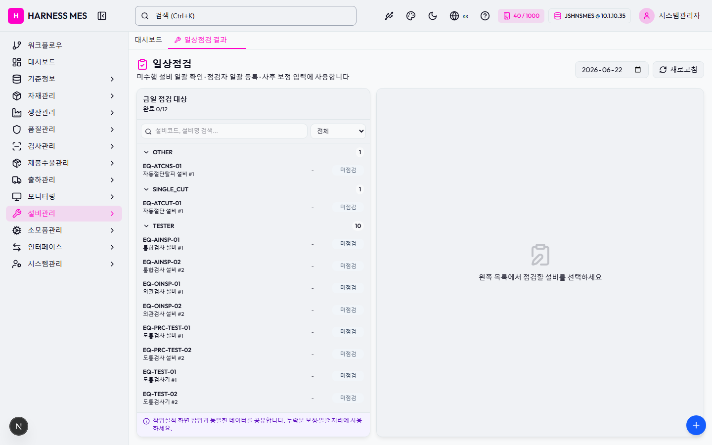

Route: /equipment/daily-inspect
Status: FAIL / HTTP 200
| 기능/버튼 | 처리 방식 | 상태 | 비고 |
|---|---|---|---|
| 화면 로드 | GET /equipment/daily-inspect | 실행 | HTTP 200 |
| 초기 API 호출 | 브라우저 네트워크 수집 | 실행 | 13건 |
| 🇰🇷 | 화면 버튼 목록화 | 목록화 | 후속 메뉴별 세부 시나리오 실행 대상 |
| 시스템관리자 | 화면 버튼 목록화 | 목록화 | 후속 메뉴별 세부 시나리오 실행 대상 |
| 워크플로우 | 화면 버튼 목록화 | 목록화 | 후속 메뉴별 세부 시나리오 실행 대상 |
| 대시보드 | 화면 버튼 목록화 | 목록화 | 후속 메뉴별 세부 시나리오 실행 대상 |
| 기준정보 | 화면 버튼 목록화 | 목록화 | 후속 메뉴별 세부 시나리오 실행 대상 |
| 자재관리 | 화면 버튼 목록화 | 목록화 | 후속 메뉴별 세부 시나리오 실행 대상 |
| 생산관리 | 화면 버튼 목록화 | 목록화 | 후속 메뉴별 세부 시나리오 실행 대상 |
| 품질관리 | 화면 버튼 목록화 | 목록화 | 후속 메뉴별 세부 시나리오 실행 대상 |
| 검사관리 | 화면 버튼 목록화 | 목록화 | 후속 메뉴별 세부 시나리오 실행 대상 |
| 제품수불관리 | 화면 버튼 목록화 | 목록화 | 후속 메뉴별 세부 시나리오 실행 대상 |
| 출하관리 | 화면 버튼 목록화 | 목록화 | 후속 메뉴별 세부 시나리오 실행 대상 |
| 모니터링 | 화면 버튼 목록화 | 목록화 | 후속 메뉴별 세부 시나리오 실행 대상 |
| 설비관리 | 화면 버튼 목록화 | 목록화 | 후속 메뉴별 세부 시나리오 실행 대상 |
| 소모품관리 | 화면 버튼 목록화 | 목록화 | 후속 메뉴별 세부 시나리오 실행 대상 |
| 인터페이스 | 화면 버튼 목록화 | 목록화 | 후속 메뉴별 세부 시나리오 실행 대상 |
| 시스템관리 | 화면 버튼 목록화 | 목록화 | 후속 메뉴별 세부 시나리오 실행 대상 |
| 일상점검 결과 | 화면 버튼 목록화 | 목록화 | 후속 메뉴별 세부 시나리오 실행 대상 |
| 새로고침 | 화면 버튼 목록화 | 목록화 | 후속 메뉴별 세부 시나리오 실행 대상 |
| OTHER 1 | 화면 버튼 목록화 | 목록화 | 후속 메뉴별 세부 시나리오 실행 대상 |
| SINGLE_CUT 1 | 화면 버튼 목록화 | 목록화 | 후속 메뉴별 세부 시나리오 실행 대상 |
| TESTER 10 | 화면 버튼 목록화 | 목록화 | 후속 메뉴별 세부 시나리오 실행 대상 |
| 전체화면 보기 | 화면 버튼 목록화 | 목록화 | 후속 메뉴별 세부 시나리오 실행 대상 |
| AI 채팅 | 화면 버튼 목록화 | 목록화 | 후속 메뉴별 세부 시나리오 실행 대상 |
| 개선요청 등록 | 화면 버튼 목록화 | 목록화 | 후속 메뉴별 세부 시나리오 실행 대상 |
| 입력 필드 | DOM 수집 | 목록화 | 3개 |
| 선택 필드 | DOM 수집 | 목록화 | 1개 |
| Method | URL | Status | OK |
|---|---|---|---|
| GET | /api/health | 200 | OK |
| GET | /api/db-info | 200 | OK |
| GET | /api/health | 200 | OK |
| GET | /api/db-info | 200 | OK |
| GET | /api/system/comm-configs?commType=SERIAL&useYn=Y | 200 | OK |
| GET | /api/auth/me | 200 | OK |
| GET | /api/system/configs/active | 200 | OK |
| GET | /api/menu-categories/tree | 200 | OK |
| GET | /api/equipment/daily-inspect?inspectDateFrom=2026-06-22&inspectDateTo=2026-06-22&limit=500 | 200 | OK |
| GET | /api/master/equip-inspect-items?inspectType=DAILY&useYn=Y&limit=500 | 200 | OK |
| GET | /api/equipment/equips?limit=500 | 200 | OK |
| GET | /api/master/com-codes/all-active | 200 | OK |
| GET | /api/master/workers?limit=200&useYn=Y | 200 | OK |
requestfailed: GET /api/db-info net::ERR_ABORTED requestfailed: GET https://fonts.gstatic.com/s/outfit/v15/QGYvz_MVcBeNP4NJtEtq.woff2 net::ERR_ABORTED

H HARNESS MES 🇰🇷 40 / 1000 JSHNSMES @ 10.1.10.35 시스템관리자 워크플로우 대시보드 기준정보 자재관리 생산관리 품질관리 검사관리 제품수불관리 출하관리 모니터링 설비관리 소모품관리 인터페이스 시스템관리 대시보드 일상점검 결과 일상점검 미수행 설비 일괄 확인 · 점검자 일괄 등록 · 사후 보정 입력에 사용합니다 새로고침 금일 점검 대상 완료 0/12 전체 미점검 완료(OK) 완료(NG) OTHER 1 EQ-ATCNS-01 자동절단탈피 설비 #1 - 미점검 SINGLE_CUT 1 EQ-ATCUT-01 자동절단 설비 #1 - 미점검 TESTER 10 EQ-AINSP-01 통합검사 설비 #1 - 미점검 EQ-AINSP-02 통합검사 설비 #2 - 미점검 EQ-OINSP-01 외관검사 설비 #1 - 미점검 EQ-OINSP-02 외관검사 설비 #2 - 미점검 EQ-PRC-TEST-01 도통검사 설비 #1 - 미점검 EQ-PRC-TEST-02 도통검사 설비 #2 - 미점검 EQ-TEST-01 도통검사기 #1 - 미점검 EQ-TEST-02 도통검사기 #2 - 미점검 EQ-TINSP-01 단자검사 설비 #1 - 미점검 EQ-TINSP-02 단자검사 설비 #2 - 미점검 작업실적 화면 팝업과 동일한 데이터를 공유합니다. 누락분 보정·일괄 처리에 사용하세요. 왼쪽 목록에서 점검할 설비를 선택하세요 전체화면 보기 AI 채팅 개선요청 등록